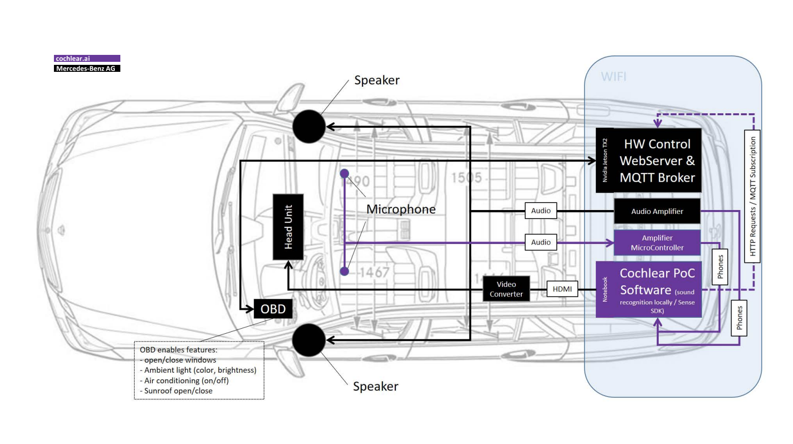

2020.12.01 - 2021.01.15
Mercdes Benz - Smart Car Sound Recognition AI

During my Internship as a Software Enginner at Cochl, (a Machine Learning Company
specializing in non-verbal Sound Recognition AI )
I created the car cockpit display
of Cochl's Sound Recognition AI integrated in
Mercedes Benz car cockpit display.
With the uprise of smart cars and more interactive technology,
Benz Daimler was interested in creating a more Emotionally Aware Car. This is why Daimler signed
a contract with Cochl to create a smart car that can recognize the state of its users through
non-verbal sounds.
Cochl's Sound AI technology can recognize non-verbal sounds such as sighs, coughs, sirens, and
machine malfunctions to recognize non-verbal, more emotionally aware human and environmental states.
Among these features, the ones in the graph below are the ones we were planning to add to Mercedes Benz.
Development
My main job was to create front-end user display for Mercedes Benz cockpit and integrate the frontend with the backend webserver. Messages recieved from the backend SDK would be caught by the webserver and passed onto the frontend to display changes or notify the user. This whole process took about a month and it was an exciting experience for me to create user interaction with AI devices on a smart car display.
Below are the features I developed in this software application.
Feature : Harmonizer
This is a sing-along feature in the car. When the user sings a song, the car will harmonize with the user and sing along.
Testing the Harmonizer feature on our backend.
Display of how the Harmonizer Feature will work.
Feature : Dog bark Detection
When a dog bark is detected, the car dog mode is turned on.
Dog bark Feature
Feature : Baby Cry Detection
When a baby cry is detected, a lullaby is turned on.
Baby Cry Feature
Feature : Emergency
When emergency sirens are detected, the car will display a route to open the road for an emergency vechicle to pass by.
Emergency Feature
Feature : Sigh Detection
When a sigh is detected,
Sigh Detection Feature
Feature : Always On
-Baby Cry: turns on lulably when the baby is crying
-Dog bark : Turns on Dog mode that will keep temperature in balance
-Finger Snap : turns on helper mode that asks "How can I help you? "
-Clap: turns on reading light
-Sigh: turns on happy music
-Laugh : car smile mode turned on. Shows smiling emoji in car
-Sneeze: turns down AirConditioner.
-Emergency : shows path to open up road for emergency vehicle.
-Whistle : opens car window, closes car window ...etc
-Yawn : turns on air ionizing mode.
-Cough: Opens the window to ventilate.
Feature : Animal Game
Users can play an animal game in the car, make appropriate animal noises that the car will detect. A game made for child enterntainment in the car.
Animal Game Feature
Feature : Audio Book
Another child enterntainment feature in the car. When an animal sound is made, a book with that animal is recommended. Then the users must make appropriate animal sounds to move unto the next parts of the book.
Audio Book Feature
Feature : Secret Language
Another child enterntainment feature in the car. When an animal sound is made, a book with that animal is recommended. Then the users must make appropriate animal sounds to move unto the next parts of the book.
Secret Language Feature
These were the features that I made for Sound Recognition AI user display. For the code, I used javascript with animations and socket.io and docker to listen to messages being sent from the webserver. Due to company privacy issues, I cannot open the full code. But if you have more inquiries on this project, please feel free to contact me anytime at sl994@cornell.edu